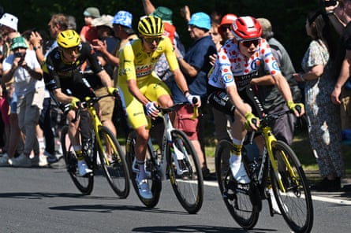

Ben Healy of Ireland took his nation’s 15th win in the Tour de France after claiming victory on stage six from Bayeux to Vire as Mathieu van der Poel recaptured the yellow jersey from Tadej Pogacar by a second.
Healy, a stage winner in the Giro d’Italia in 2023, was in five different breakaways in last year’s Tour but came away from the race empty-handed. The opportunistic Education EasyPost rider used all the aerodynamic advantages available to him to ride on his own to the biggest win of his career.
“I don’t push the most power out of everyone, but I just try and be as efficient as I possibly can,” he said. “I had full time-trial tyres, a waxed chain, a time-trial skinsuit, and just maximised absolutely everything.”
A baking Normandy afternoon did not calm the pace of the peloton, despite the presence of six categorised climbs on the 201km stage, the second longest of the race. In the relentless ebb and flow both Pogacar’s and Jonas Vingegaard’s teammates were active on the front, until eventually the decisive move came , but only after 100km.
The eight-man breakaway was brimming with quality riders, including Giro d’Italia champion Simon Yates, American national champion Quinn Simmons, Van der Poel and Paris-Nice and Vuelta a España stage winner Michael Storer.
But it was Healy who eventually took the initiative, riding clear with 44km left. Although Storer and Simmons gave chase, the 24-year-old soon opened a two-minute gap on his pursuers and forged ahead to win.
“It was a very strong group of riders and I didn’t believe in just attacking purely by legs,” he said. “I was waiting for the moment to try and find some speed and take them by surprise.”
Teammates of Jonas Vingegaard (right) and Tadej Pogacar (centre) battled on the front of the peloton before deciding not to chase the breakaways.Photograph: Tim de Waele/Getty Images
Behind the break, Pogacar opted not to put his team to the chase and to instead relinquish the overall race lead to Van der Poel, even if the eventual margin was much closer than the Slovenian had expected.
The morning after Wednesday’s individual time trial opened up a significant gap between Pogacar and Vingegaard, there was a general acknowledgment of the defending champion’s supremacy. “We remain combative and believe in Jonas,” Vingegaard’s sports director, Grischa Niermann, said.
But Rolf Aldag, sports director at the Red Bull-Bora Hansgrohe team, was not alone in thinking tthat Vingegaard and the rest of he peloton might have been victims of Pogacar’s cunning plan.
Aldag was one of those who had high hopes for his team leader, Primoz Roglic, in the Tour’s first time trial, largely based on Pogacar’s lacklustre performance a month earlier in the Critérium du Dauphiné’s “race of truth”, when he lost 28 seconds to Vingegaard in 17km .
“The question was how would the time trial result in the Dauphiné affect Pogacar? Because that result raised a lot of hope within the peloton that actually he was beatable,” Aldag said.
“Yesterday Pogacar was better than people thought he would be, including us. So did they really fix his problems – how aerodynamic he was or what different equipment he needed – in such a short time, because that would have been difficult. Or maybe, was he playing games in Dauphiné?
“We just don’t know, but I think with Pogacar everything is possible. Maybe he thought, ‘I’ll take it easy, leave things open and then destroy them in the Tour’.”
As Healy celebrated his stage win, half of the peloton was still riding wearily through the Normandy countryside to the hilltop finish in Vire. Nearly 80 riders finished more than 15 minutes behind Healy, with some others losing almost half an hour.
Friday’s stage seven of the race finishes on the 15% slopes of the Mûr de Bretagne, where Van der Poel won his first stage in 2021 . It also passes through Yffiniac, birthplace of Bernard Hinault, the last Frenchman to win the Tour, 40 years ago, in 1985.